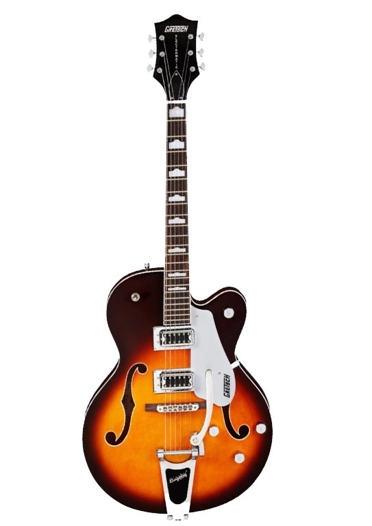

Quer aprender a tocar música?
Pouco importam as notas na música, o que conta são as sensações produzidas por elas.(Leonid Pervomaisky)Professores qualificados
Nossos professores são capacitados, muitos deles já tocaram em várias bandas famosas e hoje podem compartilhar a arte do instrumento com nossos alunos.
Aprendizagem rápida
Garantimos a aprendizagem, que é feita de forma dinâmica para que ele não desista da tocar.

Aprenda o que goste
Em nossa escola oferecemos o direito do aluno escolher o que quer aprender, e influenciamos para que eles treinem o ouvido para conseguir tocar qualquer música.